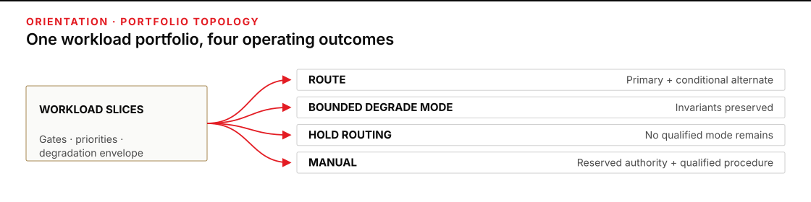
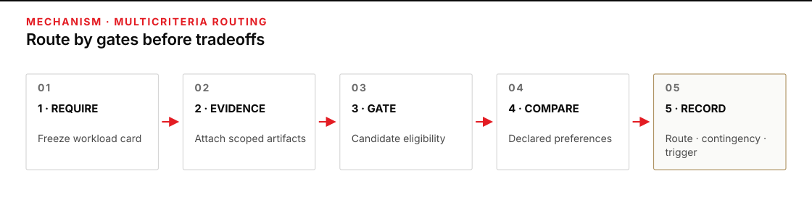
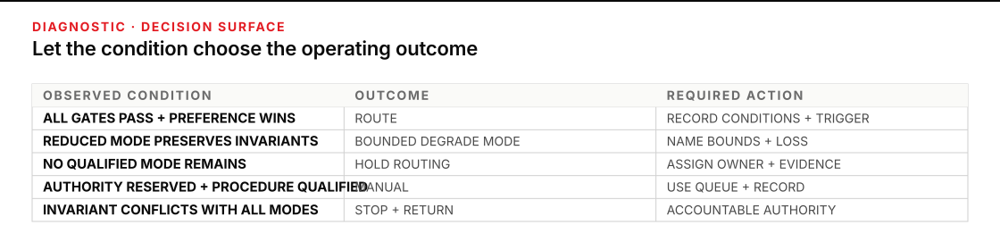

Route work, not loyalty
One endpoint can be excellent for a public, time-critical draft and unacceptable for the same-shaped task with restricted data. Another can be slower but easier to inspect. A third can be inexpensive until rejection, review, or a shared outage is counted. The useful question is not “Which endpoint is best?” It is “Which qualified operating mode fits this workload slice, under these conditions, and what happens when those conditions fail?”
Plan for 60–75 minutes. You will leave with a workload-to-endpoint routing matrix and decision record. It will separate workload requirements from endpoint evidence; route eligible work; define bounded degrade and manual modes; hold unsupported work; expose shared dependencies; and name owners and revisit triggers.
Begin after P8 · Going deeper. Bring its frozen endpoint evidence and hold/degrade comparison results. Use the endpoint trust-boundary dossier for data and control claims and the machine-choice record when the unresolved question is agent, pipeline, or human placement. If stability matters, carry matched repeated-run evidence into the routing record as well; do not rerun these methods here.
Keep two vocabularies separate. In the P8 benchmark, hold is a case that passes at home and open, while degrade is a home PASS that becomes an open FAIL; those degrade cases are the measured capability tax. Here, HOLD ROUTING means no eligible operating mode remains, and BOUNDED DEGRADE MODE means reduced service that preserves every invariant. These portfolio dispositions do not rename the benchmark labels.

Figure transcript
The source is a portfolio of workload slices, each defined by an acceptance bar, hard constraints, priorities, and a degradation envelope. A route branch goes to a qualified primary endpoint and any separately qualified conditional alternate. A bounded degrade mode is separately evidenced and preserves every non-degradable invariant. A hold-routing branch stops the workload only when no eligible route, degrade, or manual mode remains. A manual branch goes to a named human procedure with authority, capacity, timing, and an inspectable record. These portfolio dispositions are different from P8 benchmark hold and degrade labels.
Treat the portfolio as qualified operating modes
An endpoint portfolio is not a list of models or vendors. It is a set of qualified routes for defined workload slices. A workload slice groups work that shares an acceptance bar, data class, authority boundary, deadline, evidence need, and degradation envelope. “Drafting” is too broad; “public service-disruption bulletin, released by the duty officer within six minutes” is routable.
The P8 capability tax remains the frozen number of benchmark cases that changed from home PASS to open FAIL. Carry that bounded result into the capability cell with its workload and conditions; do not stretch the term across every portfolio concern. Risk and privacy, latency, endpoint spend, human inspection, resilience, observability, and acceptable degradation stay in separate dimensions. Collapsing them into a universal weighted score would let a cheap or fast endpoint compensate for a failed privacy, authority, or safety condition. It must not.
Write two cards that cannot contaminate each other
| Workload requirement card: written first | Endpoint evidence card: attached second |
|---|---|
| Outcome and acceptance bar; data class and permitted purpose; who may decide or release; deadline; required source trail or logs; recovery need; cost envelope; acceptable degradation; owner. | Workload-specific capability artifact; applicable trust-boundary dossier; observed latency conditions; endpoint spend; human inspection time; dependency tags; recovery evidence; observability; version, date, sample, and uncertainty. |
| Non-degradable invariants name what may never be traded away: fact integrity, data rules, decision authority, legal or safety constraints, and required human release. | Unknown stays unknown. A missing hard-gate artifact is not a neutral value, and evidence from a different workload does not fill the cell. |
| Degradable dimensions may worsen only inside named bounds: breadth, format, freshness, volume, or turnaround. | A fallback is a new endpoint-and-mode claim. It needs its own gate evidence, dependency record, owner, and trigger. |
This separation prevents endpoint enthusiasm from rewriting the need. It also makes disagreement productive: one person can challenge the deadline or data rule, while another can challenge the evidence, without pretending they are the same dispute.
Use gates before preferences
NASA’s Systems Engineering Handbook §6.8 separates mandatory from enhancing decision criteria and says an alternative that misses a mandatory criterion should be disregarded. The PASS / FAIL / UNKNOWN states and portfolio outcomes below are the course’s operational form of that principle, not NASA vocabulary.
- Freeze the workload slice. Record the acceptance bar, hard constraints, priorities, degradation envelope, and human authority before naming candidates.
- Attach comparable evidence. For each candidate, cite the artifact, conditions, date or version, sample, and material uncertainty. A capability result from public FAQ writing does not establish capability for a maintenance summary.
- Apply hard gates. Mark each condition
PASS,FAIL, orUNKNOWN. A failed or material unknown gate makes that candidate-and-mode ineligible; low cost cannot rescue it. IssueHOLD ROUTINGfor the workload only when no qualified primary, bounded-degrade, or manual mode remains. - Compare eligible candidates. Use the workload’s declared priority order or tradeoff statement. If one candidate is no worse on every declared preference and better on at least one, it dominates that comparison. If evidence or priorities conflict, preserve the tradeoff instead of manufacturing a total score.
- Record the operating outcome. Name the primary route, any separately qualified alternate, dependency exclusions, contingency trigger, bounded degradation, manual procedure, owner, and revisit event.
Use four portfolio outcomes precisely. ROUTE means every hard gate passes and the candidate wins by the declared preferences. HOLD ROUTING means no eligible route, bounded-degrade mode, or manual mode exists, often because remaining candidates failed a gate or carry a material unknown. BOUNDED DEGRADE MODE means a pre-authorized reduced service preserves every invariant while worsening named dimensions within bounds. MANUAL means a named human procedure has authority, capacity, a queue or deadline rule, and an evidence trail. “Someone will handle it” is not a manual route.
Disposition and mechanism are different. A manual procedure can implement BOUNDED DEGRADE MODE for a workload normally routed to a machine; it preserves the invariants but intentionally loses allowed breadth, format, volume, or speed. Use the MANUAL disposition when the full-fidelity workload or consequential authority is assigned to a qualified human procedure. NIST SP 800-53 Rev. 5, CP-2 and CP-4 ground planned degradation, manual modes, alternate processing, and contingency testing; the four labels here remain a course field method.
Count shared causes, not endpoint labels
Two endpoints do not create resilience when the same event disables both. NIST SP 800-53 Rev. 5, CP-8 gives a telecommunications-specific example: alternate services should reduce shared single points of failure and common susceptibility. Dependency tags broaden that reading as a course systems-design method. Tag only what your evidence supports: external network N1, enterprise identity I1, local power P1, shared gateway G1, or common provider control plane C1. An alternate may be qualified for one failure and useless for another. Write “alternate for loss of endpoint runtime; not for N1 or I1 outage,” rather than “backup.”
Cost also needs a denominator. Endpoint spend per accepted output is total measured endpoint spend ÷ accepted outputs under stated conditions, so retry and rejected-output spend stays in the numerator. Keep human inspection minutes beside it rather than silently converting labor and service spend into one invented currency. A low price per request can hide retries, rejection, and slow inspection. Use current figures only from your own dated evidence; the examples below use fictional service credits.

Figure transcript
First freeze one workload slice with acceptance, data, authority, deadline, evidence, resilience, cost, and degradation requirements. Second attach workload-specific endpoint evidence with conditions, date, sample, dependency tags, and uncertainty. Third make each candidate-and-mode with a failed or material unknown gate ineligible; hold the workload only if no qualified mode remains. Fourth compare only eligible candidates using the workload's declared priority or tradeoff; do not use a universal score. Fifth record the primary route, separately qualified alternate, bounded degrade or manual mode, exclusions, owner, and revisit trigger.
Worked case: Orchard County Transit builds a four-mode portfolio
Orchard County Transit has three unnamed endpoint arrangements and one approved manual desk. Endpoint A is managed-hosted and depends on the external network N1 and enterprise identity I1. Endpoint B is organization-hosted and depends on I1 and local power P1. Endpoint C is approved only for public data and depends on N1 and its own service identity S1. The manual desk is not “free”; its records state authority, staffing capacity, elapsed time, and the fields it can preserve.
The team receives dated capability, latency, cost, inspection-time, observability, and trust-boundary evidence. How those measurements were produced belongs to the evidence artifacts. The routing decision starts from their bounded claims.
1. Freeze requirements before opening endpoint evidence
| Slice | Hard gates | Preferences after gates | Allowed degradation or human route |
|---|---|---|---|
| W1 · Urgent public disruption bulletin | 24/24 essential facts; public or approved source data; artifact-level source trail; p95 completion ≤ 6 min; duty-officer release. | Lower completion time, then lower inspection time. | Fixed facts-only bulletin may take ≤ 12 min. Facts, data rule, source trail, and human release may not degrade. |
| W2 · Sensitive maintenance summary | ≥ 18/20 accepted cases; sensitive-data route cleared; source trail; p95 completion ≤ 60 min; median inspection ≤ 10 min. | Lower endpoint spend per accepted output, then lower inspection time. | No reduced content mode. A conditional alternate may be used only for failures outside shared dependencies. |
| W3 · Public rider FAQ | ≥ 17/20 accepted cases; public data; source trail; median inspection ≤ 10 min; communications release. | Lower endpoint spend per accepted output. | Hold non-urgent drafts if no qualified endpoint remains. |
| W4 · Confidential supplier claim | ≥ 19/20 accepted cases; restricted-contract route cleared; required support locations resolved; source trail. | Compare only after every gate passes. | No approved alternate or manual capacity yet. |
| W5 · Employee disciplinary recommendation | Employment policy reserves the decision to authorized people. | Not applicable to endpoint selection. | Named employee-relations procedure, capacity four cases/day, one-business-day queue target. |
2. Read evidence without changing the gates
| Slice | Endpoint A | Endpoint B | Endpoint C or manual evidence |
|---|---|---|---|
| W1 | 24/24; p95 4 min; source trail present; public data cleared; median inspection 2 min. | 23/24; p95 7 min; source trail present. | C: 24/24; p95 3 min; no artifact-level source trail. Manual fixed bulletin: 6/6 drills preserved essential facts, source trail, and release record; observed 9–11 min. |
| W2 | 20/20; p95 completion 12 min; 120 service credits / 20 accepted = 6 credits per accepted output; median inspection 5 min; sensitive route and source trail cleared. | 18/20; p95 completion 20 min; 36 service credits / 18 accepted = 2 credits per accepted output; median inspection 8 min; sensitive route and source trail cleared. | C: sensitive data prohibited. A and B both depend on I1. |
| W3 | 19/20; 5 credits per accepted output; median inspection 4 min; source trail present; public data cleared. | 18/20; 2 credits per accepted output; median inspection 7 min; source trail present; public data cleared. | C: 17/20; 1 credit per accepted output; median inspection 6 min; source trail present; public data cleared. |
| W4 | 20/20; provider-support location is UNKNOWN after a support-model change. | 17/20; restricted-data route cleared. | C: restricted data prohibited. No approved manual process or owner is recorded. |
| W5 | Capability evidence is irrelevant to the reserved decision authority. | Employee-relations procedure: named authority, intake log, four-case daily capacity, one-day queue target. | |
3. Make the decision auditable
| Slice | Outcome | Decision and reason | Contingency, owner, and trigger |
|---|---|---|---|
| W1 | ROUTE A | A is the sole eligible machine route. B fails capability and latency; C fails the source-trail gate. | On loss of A, enter BOUNDED DEGRADE MODE through the separately evidenced facts-only manual bulletin. Duty officer owns release. Revisit after a source-trail, latency, or dependency change. |
| W2 | ROUTE B | A and B both pass. The predeclared first preference is endpoint spend per accepted output: B is 2 credits and A is 6. Both remain under the inspection-time gate, so A’s higher acceptance count does not erase the stated priority. | A is conditional alternate for B runtime or P1 loss, but not for I1 loss because both depend on it. Operations owner revisits when cost, acceptance, inspection, route, or dependency evidence changes. |
| W3 | ROUTE C | All three pass; C wins the declared cost preference at 1 credit per accepted output. Its lower capability count is still inside this workload’s acceptance gate. | B is a separately qualified alternate for C identity failure, but not for a broader route assumption without updated dependency evidence. Communications owner retains release. |
| W4 | HOLD ROUTING | A has a material privacy-location unknown, B fails capability, and C is prohibited. Missing manual capacity and ownership prevent “send it to a person” from becoming a route. | Return the support-location question to privacy/legal and the manual-capacity decision to procurement. Resume only when a gate has applicable evidence and an owner accepts the route. |
| W5 | MANUAL | The authorized employee-relations procedure owns the consequential decision. Endpoint quality cannot outvote authority. | Return on queue breach, role change, policy change, or missing case record. Any machine-assisted preparation remains outside the decision unless separately authorized. |
What matters: W2 routes to B. The route is not a claim that B is globally better. It says B satisfies this slice’s gates and wins its declared cost preference under the recorded conditions. Inspection minutes remain visible rather than being converted into fictional service credits. A remains useful, but its shared I1 dependency limits the failures for which it can be called an alternate.
Diagnostic example: three endpoints, no qualified machine alternate
An earlier portfolio record labeled C “the public-data fallback” for W1 because C was fast and public-data approved. It omitted the failed source-trail gate and the shared N1 tag. When a recorded N1 outage made A and C time out, B responded but still missed the W1 fact and latency gates. Endpoint count had created the appearance of resilience; the route record had no qualified machine alternate.
The observable symptom is not merely “endpoint down.” It is “every machine route available under this failure either shares the failed dependency or violates a frozen gate.” Recovery does not waive the fact or release invariants. The duty officer invokes the already qualified facts-only manual bulletin, records BOUNDED DEGRADE MODE, publishes in 10 minutes, and notes the lost narrative breadth. The portfolio owner then removes C as an N1-outage alternate, records the source-trail failure, and assigns an owner to seek a genuinely independent contingency. No endpoint becomes equivalent by being called fallback.

Figure transcript
When every hard gate passes and a candidate wins the declared comparison, route the workload and record its conditions. When a separately evidenced reduced mode preserves all invariants inside its declared bounds, mark bounded degrade mode and record what was lost. A failed or material unknown gate makes that candidate-mode ineligible; mark hold routing only when no qualified route, degrade, or manual mode remains. When policy reserves authority and a named human procedure has capacity, timing, and a record, use manual. When available modes conflict with a legal, safety, data, or authority invariant, stop and return to the accountable authority.
Build the route set for Stonehaven Food Cooperative
Use only the supplied facts. Endpoint North is organization-hosted with dependency tags I7 + P4. Endpoint East is managed-hosted with N2 + I7. Endpoint Civic is public-data-only with N2 + S9. All evidence is dated to the same decision window unless a row says otherwise.
| Slice and frozen requirement | Supplied endpoint or manual evidence |
|---|---|
| S1 · Public recall notice. 12/12 essential facts, source trail, p95 ≤ 5 min, food-safety officer release. Fixed facts-only notice may take ≤ 12 min; no fact, source, or release degradation. | North: 11/12, p95 6 min. East: 12/12, p95 4 min, source trail present. Civic: 12/12, p95 3 min, source trail absent. Manual fixed notice: 5/5 drills preserved essential facts and source trail in 9–11 min; named officer and release log. |
| S2 · Confidential formulation comparison. ≥ 19/20, formula-data route cleared, source trail, ≤ 60 min. | North: 19/20, 28 min, source trail present, but its dossier must be reopened after an administrator-role change. East: 20/20, 22 min, source trail present, but support location for formula data is unknown. Civic: formula data prohibited. No approved manual capacity. |
| S3 · Public retailer FAQ. ≥ 15/20, source trail, median inspection ≤ 8 min. After gates: lower service credits per accepted output, then lower inspection time. | North: 16/20, trail yes, 4 credits per accepted output, 7 min inspection. East: 18/20, trail yes, 3 credits per accepted output, 5 min inspection. Civic: 15/20, trail yes, 1 credit per accepted output, 6 min inspection. Public data is permitted on all three. |
| S4 · Supplier penalty determination. Procurement policy reserves the determination and signature to a contracting officer. | Named contracting-officer queue: five cases/day, two-business-day target, signed decision record. Endpoint results may not make or sign the determination. |
- Copy each requirement into a requirement card. Underline the hard gates, box the preference order, and list non-degradable invariants separately from degradable dimensions.
- Build an evidence row for every candidate. Mark
PASS,FAIL, orUNKNOWN; cite the supplied fact; and keep dependency tags visible. - Remove each candidate with a failed or material unknown gate from preference comparison. Hold the workload only if no qualified route, bounded-degrade mode, or manual mode remains.
- Record
ROUTE,HOLD ROUTING,BOUNDED DEGRADE MODE, orMANUAL. For every alternate, state the failures it does and does not cover.
Stop condition: stop if using the route would violate a data, authority, legal, safety, or release invariant; if a material hard-gate artifact is missing or no longer applicable; if the route would depend on unapproved real data; or if no named person can accept the residual decision. Return data and retention questions to privacy or the data owner, access and dependency questions to security or operations, consequential authority to the accountable policy owner, and capacity or cost tradeoffs to the service owner.
- S1:
ROUTE EAST. East alone passes all machine gates. Civic’s speed cannot compensate for the missing source trail; North fails facts and latency. On East loss, use the separately qualified manual notice asBOUNDED DEGRADE MODE. Civic is not anN2-outage alternate because East and Civic shareN2. - S2:
HOLD ROUTING. North’s prior dossier no longer establishes the changed administrator boundary, East has a material support-location unknown, Civic is prohibited, and no manual capacity is approved. Return the evidence decisions to security/privacy and the service owner. - S3:
ROUTE CIVIC. Every endpoint passes; Civic wins the declared first preference at one service credit per accepted output. East’s higher acceptance count does not become a new gate after the evidence is seen. - S4:
MANUAL. The contracting-officer procedure has authority, capacity, timing, and a signed artifact. Endpoint capability is irrelevant to the reserved determination. - Shared dependencies: North and East share
I7; East and Civic shareN2. A contingency claim must exclude the corresponding identity or network failure even though the arrangements otherwise differ.
Copy the routing matrix and decision record
PORTFOLIO / VERSION / DATE:
DECISION OWNER:
EVIDENCE WINDOW:
WORKLOAD REQUIREMENT CARD
Slice / outcome:
Acceptance bar:
Data class + permitted purpose:
Authority / required human release:
Deadline:
Required evidence / observability:
Resilience need:
Cost envelope:
Non-degradable invariants:
Allowed degradation + bounds:
Declared preference order:
ENDPOINT EVIDENCE
| Candidate + mode | Capability artifact / conditions | Data + authority gate / dossier | Latency evidence | Endpoint spend / accepted output | Human inspection | Observability | Dependency tags | Recovery / contingency evidence | Version / date / sample | PASS / FAIL / UNKNOWN + reason |
|---|---|---|---|---|---|---|---|---|---|---|
| | | | | | | | | | | |
ROUTE DECISION
Outcome: ROUTE / HOLD ROUTING / BOUNDED DEGRADE MODE / MANUAL / STOP & RETURN
Primary route + reason under declared preferences:
Conditional alternate + separately qualifying evidence:
Failures the alternate does NOT cover:
Contingency evidence artifact / date / owner:
Bounded-degrade mode + preserved invariants + lost dimensions:
Manual role + authority + capacity + queue rule + artifact:
Material unknown + owner:
Trigger / observable signal / action / decision owner:
Revisit events:
Residual uncertainty:Routing rules that prevent false confidence
- A material unknown in a hard gate makes that candidate-and-mode ineligible. Cost or speed cannot compensate.
- When two eligible endpoints trade capability, cost, or latency, use the requirement card’s declared priority and comparable evidence; do not manufacture a total score.
- Endpoints with shared identity, network, gateway, power, or control-plane dependencies are alternatives only for failures outside those shared causes.
- A reduced mode qualifies as
BOUNDED DEGRADE MODEonly when it is pre-authorized, separately evidenced, and preserves every invariant. - A person is not a manual route until authority, capacity, timing, trigger, and an evidence trail are recorded.
- A configuration change that invalidates a trust dossier makes the route ineligible until new evidence passes and the decision owner reauthorizes it.
Route one real workload slice this week
Choose one low-consequence workload whose acceptable-use authority is already clear. Freeze its requirement card before opening endpoint documentation. Attach existing evidence rather than rerunning tests by habit. If a cell depends on repeatability, use the repeated-trial artifact; if it depends on data flow or administration, use the trust-boundary dossier; if the question is whether a machine should own the work at all, return to the machine-choice record.
Issue a bounded route record for one primary mode and one contingency. If the contingency lacks its own applicable gate and dependency evidence, mark it UNQUALIFIED and design a safe hold or manual return instead. Reopen the record when the workload, data class, acceptance bar, endpoint version, route, provider, administrator role, dependency, source-trail behavior, latency distribution, cost basis, human capacity, policy, or requirement changes. Also reopen it when an observed result conflicts with the evidence card.
Stop and return to a human authority when the route would cross an unapproved data or action boundary, a non-degradable invariant conflicts with the available modes, evidence is materially unknown, a high-consequence decision lacks accountable authority, or recovery would require permissions you do not hold. The portfolio’s value is not that work always continues. It is that continuation, reduction, holding, and human return are deliberate and inspectable.
Sources
- NIST · AI Risk Management Framework Core — context and risk tolerance, documented costs and impacts, roles, measurement limits, and contingency processes for high-risk third-party systems.
- NIST · AI RMF Playbook, Manage — applying risk tolerance and tradeoffs, documenting and monitoring third-party systems, and planning incident response, recovery, and change management.
- NASA · Systems Engineering Handbook §6.8, Decision Analysis — mission objectives, mandatory and enhancing criteria, alternatives, uncertainty, selection rules, and documented rationale.
- NIST · SP 800-53 Rev. 5, CP-2/CP-4/CP-8/SA-9 — mission-driven external-service oversight, contingency modes and testing, and shared-failure considerations.
- NIST CSRC · Contingency planning — restoring disrupted services through alternate systems or short-term manual processing, with plans matched to operational impact.
- U.S. GAO · Artificial Intelligence Accountability Framework — governance, performance, monitoring, traceability, and accountable practices for selecting and operating AI systems.
The requirement/evidence split, dependency tags, gate-first comparison, and four-status route record used here are course field methods synthesized from these decision, risk, contingency, and accountability sources. They are not a NIST or NASA scoring standard.